Sổ cái kinh tế thực của khu vực, khởi nguồn từ Việt NamThe real-economy ledger of the region, starting from Vietnam
GOE đưa kinh tế thực của Việt Nam lên hạ tầng on-chain, để mỗi lợi thế trở thành tài sản mà vốn quốc tế đầu tư được.GOE brings Vietnam's real economy onto on-chain infrastructure, so each advantage becomes an asset international capital can invest in.
Join us →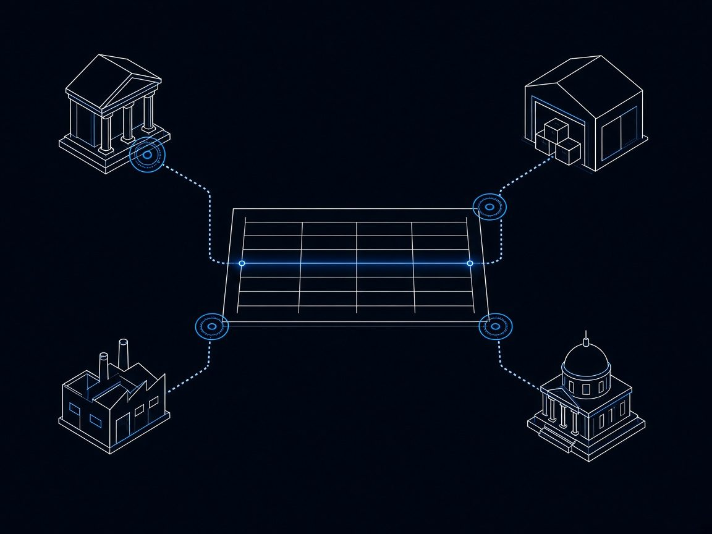
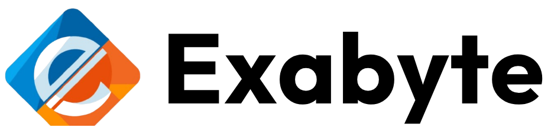
Các Thành viên Cốt lõi sẽ đóng vai trò dẫn dắt trong một phòng thí nghiệm kinh tế mở, nơi các mô hình kinh tế on-chain được thử nghiệm, kiểm chứng và đưa vào thực tế.Core Members will play a leading role inside an open economic laboratory, where on-chain economic models are tested, validated and brought into practice.
GOE đưa hạ tầng on-chain vào đúng những khâu kinh tế thực đang cần và pháp luật đã cho phép — định danh doanh nghiệp, truy xuất nguồn gốc, chứng từ điện tử, tài trợ thương mại — và triển khai cùng VIFC, các cơ quan quản lý trong nước và đối tác trong khu vực, bắt đầu từ cơ chế thử nghiệm có kiểm soát.GOE brings on-chain infrastructure to exactly the points the real economy needs and the law already allows — business identity, traceability, electronic documents, trade finance — deployed with VIFC, domestic regulators and regional partners, starting from a controlled pilot mechanism.
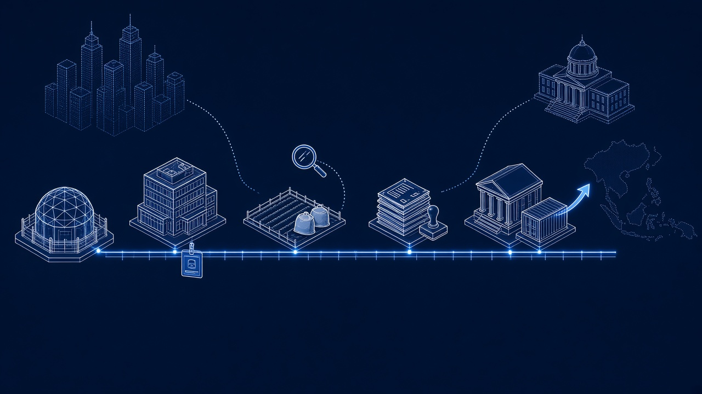
Thí điểm có kiểm soátControlled pilotĐịnh danh doanh nghiệpBusiness identityTruy xuất nguồn gốcTraceabilityChứng từ điện tửe-DocumentsTài trợ thương mạiTrade financeVIFCCơ quan quản lýRegulatorsĐối tác khu vựcRegional partners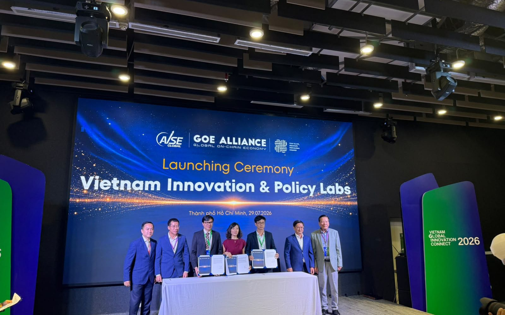
Nghiên cứu và đề xuất cùng cơ quan quản lý về chuẩn và chính sách cho định danh doanh nghiệp và tiêu chuẩn hàng hóa. Ra mắt 29/07/2026 tại VGIC 2026.Researches and proposes, with regulators, standards and policy for business identity and commodity standards. Launched 29/07/2026 at VGIC 2026.
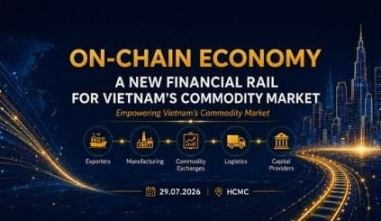
Mỗi dự án triển khai qua một pháp nhân riêng, tách bạch vốn và trách nhiệm, bắt đầu từ thí điểm tại Đà Nẵng.Each project runs through its own entity, separating capital and liability, starting with the Da Nang pilot.
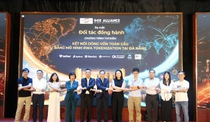
Chuỗi đối thoại hai chiều giữa đối tác quốc tế và Việt Nam, GOE làm host: podcast, webinar, newsletter; xây cộng đồng và chuẩn chung, cùng chuỗi Sáng Đèn.A two-way dialogue between international partners and Vietnam, hosted by GOE: podcast, webinar, newsletter; building community and shared standards, with the Sáng Đèn series.
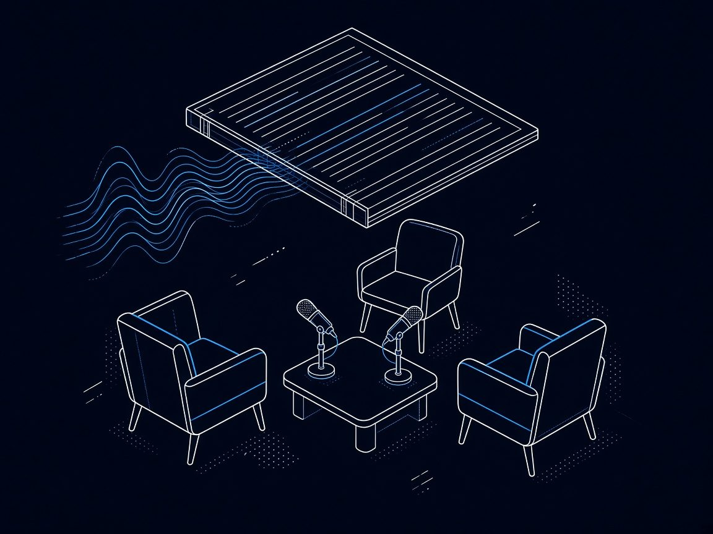
“Quốc tế hỏi, Việt Nam trả lờiThe world asks, Vietnam answers”
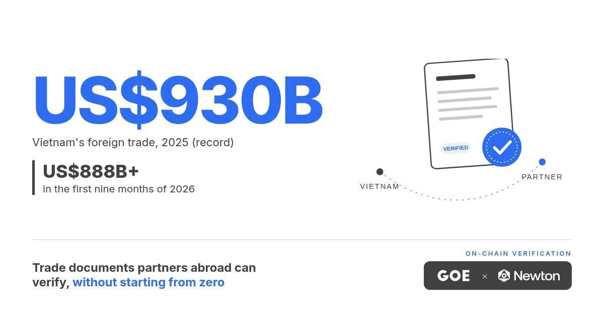
Vietnam's foreign trade reached a record US$930 billion in 2025, and passed US$888 billion in just the first nine months of this year. Behind that number are thousands of Vietnamese businesses whose goods, track record and reputation are real, but still hard for a partner abroad to check. So with every new buyer, they start from zero. GOE and Newton
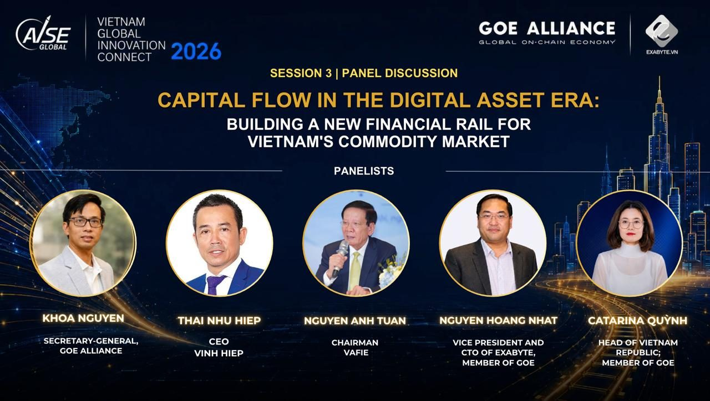
Ho Chi Minh City, 29 July 2026 GOE Alliance hosted a closed-door Special Discussion Session on Vietnam's Commodity Market, bringing together senior representatives from across the country's agricultural export, logistics, banking, and investment ecosystem to examine a single question: can new on-chain financial infrastructure solve the capital constraints holding Vietnam's commodity sector back? The session drew Vinh Hiep — Vietnam's
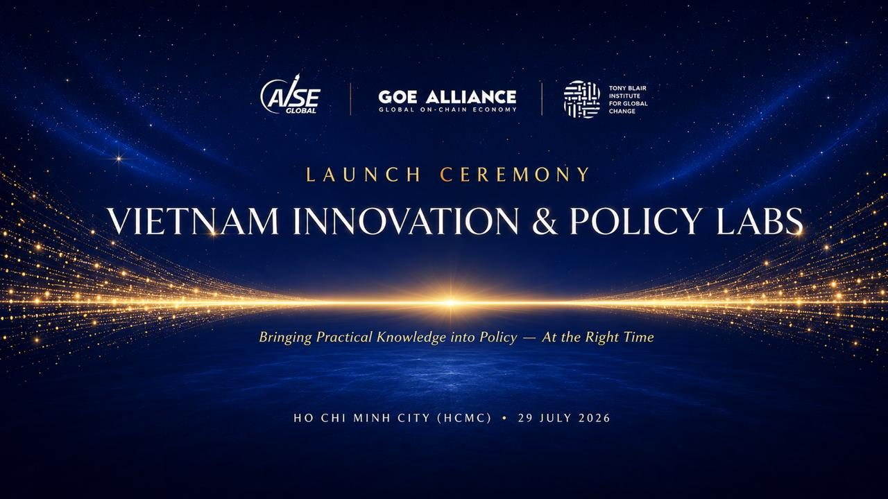
Vietnam Innovation & Policy Labs is live. 🇻🇳 29 July in Ho Chi Minh City, GOE Alliance, AVSE Global and the Tony Blair Institute for Global Change signed the Founding Declaration of Vietnam Innovation & Policy Labs (VIPL) — an independent policy research and advisory institution, built to bring practical expertise into Vietnam's policymaking process at the right time and
Để lại thông tin, đội GOE sẽ liên hệ.Leave your details and the GOE team will be in touch.
khoa.nguyen@goealliance.org
Liên minh Kinh tế On-chain Toàn cầu (GOE Alliance), ra đời tại Diễn đàn Kinh tế Mùa Thu 2025, thành viên chiến lược của VIFC TP.HCM từ 11/02/2026.The Global On-chain Economy Alliance, born at the Autumn Economic Forum 2025, strategic member of VIFC HCMC since 11/02/2026.
Không. GOE ghi sổ và điều phối các bên; tiền đi qua định chế được cấp phép, trong khuôn khổ Trung tâm Tài chính Quốc tế và pháp luật hiện hành.No. GOE records and coordinates; money moves through licensed institutions, within the International Financial Centre framework and current law.
Định danh doanh nghiệp, truy xuất nguồn gốc, chứng từ điện tử và tài trợ thương mại, bắt đầu từ cơ chế thử nghiệm có kiểm soát.Business identity, traceability, electronic documents and trade finance, starting from a controlled pilot mechanism.
Liên minh theo Tuyên bố Thành viên Sáng lập; một công ty TNHH tại Việt Nam vận hành; mỗi dự án có pháp nhân riêng (SPV).An alliance under the Founding Members' Declaration; a Vietnamese LLC operates it; each project has its own SPV.
Chuỗi đối thoại hai chiều T11/2026 – T3/2027 qua podcast, webinar và newsletter, GOE làm host.A two-way dialogue series, Nov 2026 – Mar 2027, via podcast, webinar and newsletter, hosted by GOE.
28/11 tại Đà Nẵng: ra mắt Mạng lưới Tài chính Hàng hóa (CFN). 20/12: ra mắt hành lang Việt Nam – Thái Lan. 28/11 in Da Nang: Commodity Finance Network (CFN) launch. 20/12: Vietnam – Thailand corridor launch.
Tầng 21, Friendship Tower, 31 Lê Duẩn, TP.HCM · khoa.nguyen@goealliance.org.Floor 21, Friendship Tower, 31 Le Duan, HCMC · khoa.nguyen@goealliance.org.